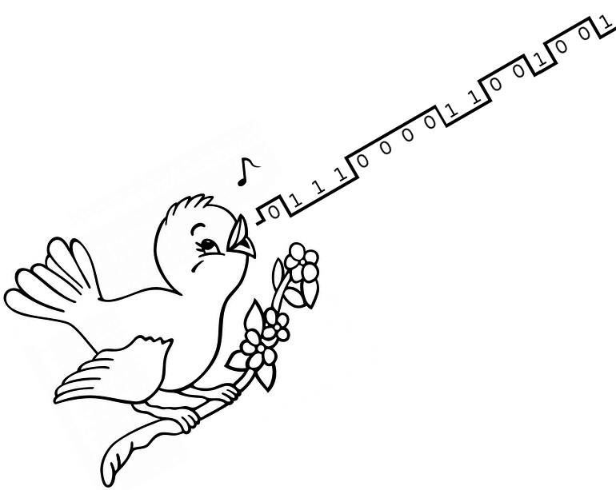
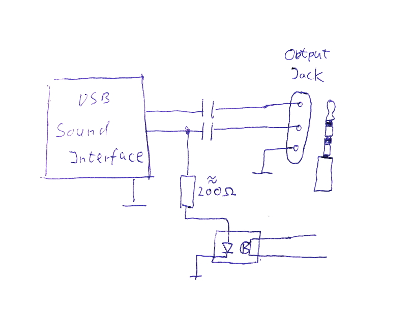
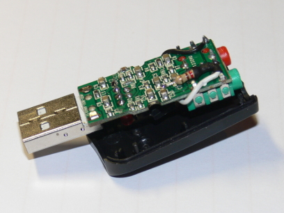
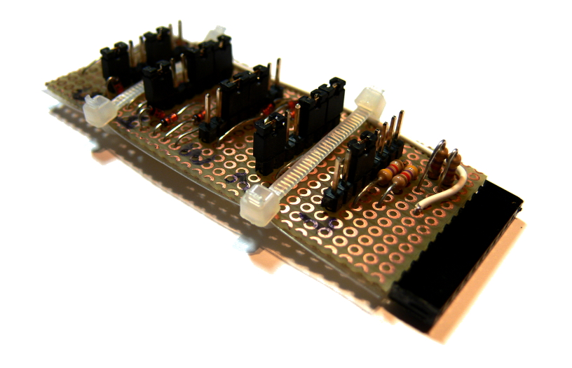

B-Netz was the second mobile telephone network in Germany.
It was the successor of the A-Netz.
It existed between 1972 and 1994.
Using digital technology and later microprocessors, the phones were still as big as a suitcase.
It used full duplex radio link.
The call was placed by automatic dialing in both direction, so no requirement for an operator.
After full deployment in 1986, there were 158 base stations.
Early devices used up to 38 voice channels. Later units used up to 75 voice channels.
A maximum of about 27,000 subscribers were counted 1986.
The basic charge in the beginning was 270 German Marks.
Calls were charged like regular calls.
The network was congested in 1979, so there was a stop for new subscribers.
Due to congestion, in 1980, the German Federal Post Office lowered the basic charge down to 180 German Marks, but added an extra charge of about 1 German Marks per minute, no matter what direction the call was made.
This helped to lower the channel allocation time.
Mobile station transmit power: 15 Watts (100 mW for special channels)
Base station transmit power: 10..30 Watts (100 mW for special channels)

Listen to base station's idle sequence:
How it works
Note that the following protocol description is based on my research. It may be incomplete or wrong on certain details.
Two tones are used for signaling:
F0 = 2070 Hz
F1 = 1950 Hz
For continuous signals, the tones must be detected at least 70ms.
Continuous tones used by mobile station:
Kanalbelegung: F0 is sent by the mobile to allocate a channel for outgoing call.
Rufbestätigung: F1 is sent by the mobile to acknowledge incoming call.
Beginnsignal: F0 is sent by mobile to indicate answer of the mobile subscriber.
Continuous tones used by base station:
Wahlabruf: F1 is sent by the base station to acknowledge outging call.
Rufhaltung: F1 is sent by the base station while the mobile station is ringing.
Digits are coded as 16 bits and transferred at a rate of 100 bits per second.
Each bit consists of the signaling tones F0 and F1 and has a duration of 10 ms.
All digit starts with sync pattern ("0 1 1 1 0").
Funkwahl ohne Gebührenübermittlung: dialing without metering support
Funkwahl mit Gebührenübermittlung: dialing with metering support
Wahlziffer: dialing digits
Funkwahlende: end of dialing
Schlußsignal: hangup signal
Digits used by base station:
Gruppenfreisignal: idle pattern
Wahlziffer: dialing digits
Kanalbefehl: channel assignment
Trennsignal: clear signal
Idle base station:
When a base station transceiver is idle, it repeatedly sends one idle pattern ("Gruppenfreisignal") on down-link.
This signal can be used by the mobile subscriber to select a particular base stations to lower call fees or to select the base station that a car is driving close to.
If no pattern is selected, the mobile station selects any base station on mobile originated call.
If a pattern 1..9 is selected, the mobile station selects only the base stations which sends that idle pattern.
There is a special idle pattern that is used for reduced TX power.
This was used in areas with many subscribers.
The idle signal 19 is used.
The mobile station will reduce TX power when selecting a close base station for outgoing call.
Call from mobile station:
The mobile station starts scanning all traffic channels one time.
If there is no radio signal on the channel, the mobile stations continues with next channel.
If there is a signal on the channel, the mobile station tries to decode it for 320 ms max.
If there is no signal or if there is no idle pattern or if the idle pattern does not match the selected one, the mobile station continues with the next channel.
If no channel is found, a busy signal is indicated to the mobile subscriber.
If a free and suitable channel was found, the mobile station sends channel allocation signal ("Kanalbelegung") on up-link channel and waits for dial request signal ("Wahlabruf") from the base station.
When the base station receives the channel allocation signal, it stops idle pattern and transmits dial request signal.
If no dial request signal is received within 640 milliseconds, the mobile station will continue searching channel.
If no dialing is received from mobile station within 3.8 seconds, the base station will send the disconnect signal for at least 350 ms and return idle.
When the mobile station receives the dial request signal, it seamlessly transmits a dial string.
The string consist of a start signal ("Funkwahl"), 5 digits of mobile identity ("Wahlziffern"), dialed digits (without 0 at the beginning) and the stop signal ("Funkwahlende"):
Funkwahl
Wahlziffer 5 (Example of mobile identity: 50993)
Wahlziffer 0
Wahlziffer 9
Wahlziffer 9
Wahlziffer 3
Wahlziffer 3 (Example of dialing: 0310, no first digit)
Wahlziffer 1
Wahlziffer 0
Funkwahlende
The mobile station can send two different start signals.
One indicates to the base station to send metering pulses.
If metering is selected, the bandwidth is reduced from 3000 Hz down to 2700 Hz.
The metering pulse is then sent as a 2900 Hz tone.
The duration is 140 ms and the frequency deviation *TBD* KHz.
While dialing is received by the base station, the base station repeats the 5 digits of mobile identity.
It is repeated right after the 5th digit of the mobile identity was received.
Only the (bare) 5 digits of the mobile identity are repeated, not the other digits.
The mobile station compares the repeated identity and turns transmitter off, if it mismatches.
Also if the digits are not received by the mobile station while dialing and up to 960 ms after dialing, the transmitter is turned off.
No clear signal is sent.
The mobile station then continues searching for another channel.
If another mobile station dials at the same time, this wrong identity indicates that the base station receives the other mobile station and not our mobile station.
The dial string is repeated once again by the mobile station.
Afterward the mobile station connects the speech path and conversation takes place.
If the dial string is received correctly once again by the base station, it connects the speech path and conversation takes place.
If the base station receives different repeated dialing or different mobile identity or misses a digit, it sends clear signal ("Trennsignal") for at least 350 ms and returns to idle state.
If the mobile stations receives clear signal during dialing, it indicates busy signal to the subscriber and returns to idle state.
Call to mobile station:
The calling party dials the prefix of the city where the base station is located, followed by "05", followed by the 5 digits mobile station id.
(E.g. base station on Stollberg Hill: +49-4671-05-50993)
The transceiver of the base station switches to channel 19 and sends a paging sequence that consists of 5 digits of mobile identity ("Wahlziffern") and the channel assignment digit ("Kanalbefehl"):
Wahlziffer 5 (Example of mobile identity: 50993)
Wahlziffer 0
Wahlziffer 9
Wahlziffer 9
Wahlziffer 3
Kanalbefehl 1 (Example of channel: 1)
Then the base station returns to the ordered channel and waits 700 ms to 2.1 seconds for the mobile station to send the call acknowledge signal ("Rufbestätigung").
If it is not received, the base station repeats the paging sequence again.
If there is still no call acknowledge signal, it sends a clear signal ("Trennsignal") for at lease 350 ms and returns to idle state and indicates announcement to the calling party that the mobile station is (currently) not available.
(German announcement sais: "Dieser Anschluß ist vorrübergehend nicht erreichbar!")
When the mobile station receives the 5 digits of mobile identity, it check if it matches with its own identity.
If so, it switches to the indicated channel and sends call acknowledge signal.
The base station receives the call acknowledge signal and sends the call hold signal ("Rufhaltung") and indicates ringback tone to the calling party.
When the mobile station receives the call hold signal, it indicates ringing tone to the mobile subscriber.
Additionally the car's siren is turned on, if it is connected to the phone and if the ignition of the car is turned off.
If the mobile station does not receive the call hold signal within 640 ms, it returns to idle state.
When the called mobile subscriber answers, the mobile station sends the answer signal ("Beginnsignal").
When the base station receives the answer signal, it stops sending call hold signal and connects the speech path and conversation takes place.
When the mobile station detects that the call hold signal is gone, it connects the speech path and conversation takes place.
If the mobile subscriber does not answer within 60 seconds, the base station sends clear signal ("Trennsignal") for 12 seconds and returns to idle state.
When the mobile station receives clear signal, it stops ringing tone and returns to idle state.
Release by the mobile station:
When the mobile subscriber hangs up, the mobile station sends up to 4 times the hangup signal ("Schlußsignal") and returns to idle state. If it receives the clear signal ("Trennsignal") from base station, it stops sending hangup signal and returns to idle state.
When the base station receives the hangup signal ("Schlußsignal"), it releases the call, sends clear signal ("Trennsignal") and returns to idle state.
Release by the base station:
When the party on the fixed network hangs up, base station sends the clear signal ("Trennsignal") for at least 350 ms and returns to idle state.
At any time: When the mobile station receives the clear signal ("Trennsignal"), it returns to idle state.
Signal loss:
When the signal gets lost for more than 9,6 seconds, the mobile station will return to idle and indicates busy signal to the mobile subscriber.
When the signal gets lost for more than 12.5 seconds, the base station will clears the call, send ("Trennsignal") for at least 350 ms and returns to idle state.
Reduced transmit power:
When the mobile phone starts outgoing call on a channel that uses GFS ('Gruppenfreisignal') 19, the transmit power is reduced to 100 mW.
Even if no GFS is selected, the power is reduced on a channel that broadcasts GFS 19.
(Do not mess up GFS signal 19 with radio channel 19. GFS signal 19 is used to reduce mobile station's power, while radio channel 19 is used to page the mobile station.)
Setup of a base station
Before testing this software, power on your B-Netz.
Refer to the phone's manual on how to dial a number.
Start dialing and after some seconds you should hear a busy signal.
This means that the phone sweeps over all channels to find a base station.
But you get a busy signal, that means there is no channel.
Now run your base station on channel 1. (With SDR use channel 17.)
You may add '-G x' or '--gfs x' command line option to change the station ID from default to any value you like. (see help)
If you have a phone that supports GFS 19, please use this GFS 19 to reduce the transmit power of the phone to 100 mW instead of 15 Watts.
To see if your phone supports it, try to preselect GFS 19.
Tune the transmitter to 153.010 MHz and the receiver to 148.410 MHz.
You should tune the receiver to 153.010 MHz first, to check if you can hear and decode the idle signal from the base station.
Then tune to actually up-link frequency 148.410 MHz.
The actual level is not yet relevant.
# src/bnetz/bnetz -k 1
...
bnetz.c:316 info : Entering IDLE state, sending 'Gruppenfreisignal' 2 on channel 1.
Base station ready, please tune transmitter to 153.010 MHz and receiver to 148.410 MHz.
To call phone, switch transmitter (using paging signal) to 153.370 MHz.
on-hook: ..... (enter 0..9 or d=dial)
Enter a phone number (just a few digits, like "0310") on your phone.
Start dialing and watch the base station receiving the call.
If there is no reaction from the base station, check the volume again.
Also check if you can receive yourself, if you tune the receiver to the down-link channel.
Set the selector for the base station ID ("Gruppenfreisignal") to 0.
bnetz.c:351 info : Entering IDLE state, sending 'Gruppenfreisignal' 2.
Base station for channel 1 ready, please tune transmitter to 153.010 MHz and receiver to 148.410 MHz.
To call phone, switch transmitter (using paging signal) to 153.370 MHz.
mncc_sock.c:137 notice : MNCC socket connected.
dsp.c:159 info : Detecting continuous tone: 2070:Level= 80% Quality=100%
bnetz.c:470 info : Received signal 'Kanalbelegung' from mobile station, sending signal 'Wahlabruf'.
bnetz.c:509 info : Digit RX Level: 80% Quality=85
bnetz.c:524 info : Received telegramm digit 'Funkwahl ohne Gebuehrenuebermittlung'.
bnetz.c:509 info : Digit RX Level: 81% Quality=94
bnetz.c:524 info : Received telegramm digit 'Ziffer 5'.
bnetz.c:509 info : Digit RX Level: 81% Quality=95
bnetz.c:524 info : Received telegramm digit 'Ziffer 0'.
bnetz.c:509 info : Digit RX Level: 86% Quality=95
bnetz.c:524 info : Received telegramm digit 'Ziffer 9'.
bnetz.c:509 info : Digit RX Level: 86% Quality=95
bnetz.c:524 info : Received telegramm digit 'Ziffer 9'.
bnetz.c:509 info : Digit RX Level: 86% Quality=95
bnetz.c:524 info : Received telegramm digit 'Ziffer 3'.
bnetz.c:559 info : Received station id from mobile phone: 50993
bnetz.c:509 info : Digit RX Level: 86% Quality=90
bnetz.c:524 info : Received telegramm digit 'Ziffer 3'.
bnetz.c:509 info : Digit RX Level: 81% Quality=94
bnetz.c:524 info : Received telegramm digit 'Ziffer 1'.
bnetz.c:509 info : Digit RX Level: 81% Quality=94
bnetz.c:524 info : Received telegramm digit 'Ziffer 0'.
bnetz.c:509 info : Digit RX Level: 80% Quality=94
bnetz.c:524 info : Received telegramm digit 'Funkwahlende'.
bnetz.c:567 info : Received number from mobile phone: 310
bnetz.c:569 info : Sending station id back to phone: 50993.
bnetz.c:509 info : Digit RX Level: 81% Quality=94
bnetz.c:524 info : Received telegramm digit 'Funkwahl ohne Gebuehrenuebermittlung'.
bnetz.c:509 info : Digit RX Level: 81% Quality=94
bnetz.c:524 info : Received telegramm digit 'Ziffer 5'.
bnetz.c:509 info : Digit RX Level: 80% Quality=95
bnetz.c:524 info : Received telegramm digit 'Ziffer 0'.
bnetz.c:509 info : Digit RX Level: 86% Quality=94
bnetz.c:524 info : Received telegramm digit 'Ziffer 9'.
bnetz.c:509 info : Digit RX Level: 86% Quality=94
bnetz.c:524 info : Received telegramm digit 'Ziffer 9'.
bnetz.c:509 info : Digit RX Level: 86% Quality=94
bnetz.c:524 info : Received telegramm digit 'Ziffer 3'.
bnetz.c:509 info : Digit RX Level: 86% Quality=94
bnetz.c:524 info : Received telegramm digit 'Ziffer 3'.
bnetz.c:509 info : Digit RX Level: 81% Quality=99
bnetz.c:524 info : Received telegramm digit 'Ziffer 1'.
bnetz.c:509 info : Digit RX Level: 81% Quality=100
bnetz.c:524 info : Received telegramm digit 'Ziffer 0'.
bnetz.c:509 info : Digit RX Level: 81% Quality=100
bnetz.c:524 info : Received telegramm digit 'Funkwahlende'.
bnetz.c:629 info : Dialing complete 50993->0310, call established.
bnetz.c:635 info : Setup call to network.
call.c:585 info : Incoming call from '50993' to '0310'
call.c:606 info : Sending MNCC call towards Network
...
bnetz.c:509 info : Digit RX Level: 86% Quality=98
bnetz.c:524 info : Received telegramm digit 'Trennsignal/Schlusssignal'.
bnetz.c:667 notice : Received 'Schlusssignal' from mobile station
bnetz.c:351 info : Entering IDLE state, sending 'Gruppenfreisignal' 2.
call.c:706 info : Call has been released with cause=16
call.c:723 info : Releasing MNCC call towards Network
bnetz.c:509 info : Digit RX Level: 86% Quality=98
bnetz.c:524 info : Received telegramm digit 'Trennsignal/Schlusssignal'.
bnetz.c:509 info : Digit RX Level: 86% Quality=98
bnetz.c:524 info : Received telegramm digit 'Trennsignal/Schlusssignal'.
bnetz.c:509 info : Digit RX Level: 86% Quality=98
bnetz.c:524 info : Received telegramm digit 'Trennsignal/Schlusssignal'.
The first thing the phone does is to tune to the channel.
It sweeps through all the supported channels.
It stops if it finds an idle base station transmitting it's 'Gruppenfreisignal'.
Then it transmits a signal tone, called 'Kanalbelegung'.
The base station responds and sends a signal tone, called 'Wahlabruf'.
Then the phone sends caller ID + number.
The base station replies the caller ID to prevent false transmissions.
After establishment, you can use the headset, if present, for speech communication with the phone.
If you hangup the phone, the call gets released by a message, called 'Schlußsignal'.
The base station returns to idle.
Level adjustment:
We see a receive level of around 85%.
Tune your receiver to the up-link frequency, so you get loop-back of base station broadcast.
Use the variable resistor (connecting your transmitter) to adjust the volume until the received level matches the same level of your previously received message.
In my case I adjust the transmitter to match around 85%. (+- 10% is good)
Now, whatever frequency deviation the phone transmits for signaling, so does your base station.
Use the other variable resistor (connecting your receiver) to adjust the volume until the level matches about 100%. (+- 10% is good)
Switch back the receiver to up-link frequency and restart the phone.
In order to call the phone from the base station, you need to transmit channel 19.
Your transmitter must temporarily tune to 153.370 MHz in order to page the phone.
The phones listens to incoming signals from the base station.
In order to transmit on channel 19, you may use a second transmitter or re-tune your single transmitter.
There are many ways to do that, but it is actually up to your own how to couple it and how to control your transmitter.
I use an optocoupler to tell my transmitter to switch to channel 19.


I measure about 3 Volts peak on the output of the USB chip I use.
Since my optocoupler triggers at around 1 Volts, I have two Volts on the Resistor, which results in 10 mA current.
In order to check and change the voltage, use '-P positive' or '-P negative' option to select trigger level on one audio channel.
Run the base station and enter a 5 digit number.
Measure the voltage on both audio output channels.
Once you press 'd' for dialing, the base station triggers the channel using positive or negative level.
See if and where the voltage changes.
The trigger is just about two seconds long, so check your meter quickly after pressing 'd'.
Once the base station timed out, press 'h' for hangup and try again.
Instead of using a tone or a level, the base station can write to a file. Use '-P <file>=<on>:<off>'.
When switching to channel 19, the base station writes the string <on> to <file>, afterward it writes <off> to <file>.
You may write your own tool that uses a pipe to receive the switching information. Then set <file> to your pipe.
I tried it with a Raspberry PI and used GPIO to switch: '-P /sys/class/gpio/gpio17/value=1:0'
This writes a 1 to GPIO 17 when switching to channel 19 and a 0 when switching back.
# ./bnetz/bnetz -k 1 -P positive
...
on-hook: 50993 (enter 0..9 or d=dial)
call.c:859 info : Outgoing call from to '50993'
bnetz.c:757 info : Call to mobile station, paging station id '50993'
bnetz.c:374 info : Entering paging state (try 1), sending 'Selektivruf' to '50993'.
bnetz.c:410 info : Paging mobile station 50993 complete, waiting for answer.
dsp.c:159 info : Detecting continuous tone: 1950:Level= 105% Quality=100%
bnetz.c:480 info : Received signal 'Rufbestaetigung' from mobile station, sending signal 'Rufhaltung'.
(call is ringing)
call.c:641 info : Call is alerting
...
dsp.c:159 info : Detecting continuous tone: 2070:Level= 102% Quality=99%
bnetz.c:491 info : Received signal 'Beginnsignal' from mobile station, call establised.
call.c:684 info : Call has been answered by '50993'
dsp.c:159 info : Detecting continuous tone: 2070:Level= 104% Quality=100%
Detecting loss of carrier signal:
This works with SDR only, because we do not have any RSSI (Received Signal Strength Indicator) signal from a radio connected to the sound card.
With SDR we know the RX level, so we can define a threashold value for a lost signal.
Use '-S <db>' or '--squelch <db>' to define the squelch threshold level.
To measure the noise floor, use the 'm' key to get a bar graph of the current RSSI. (RF level)
Add some dB to the noise floor for the squelch threshold value.
An easier way is to use '-S auto' or '--squelch auto' to automatically measure the noise floor level and then automatically use a threshold level that is some dB above this measured level.
This level is then used to detect loss of carrier.
Also this level is used to mute the audio path, whenever the signal gets lost for a short time.
After about 12 seconds of signal loss, a call is released - similar to the real network.
...
squelch.c:94 info : RF signal measurement: -69.2 dB noise floor, using threshold of -63.2 dB
...
In the following example I cut off the power of the phone being in a call and waited 12 seconds for the base station to time out:
...
squelch.c:114 info : RF signal weak: Muting audio (RF -77.6 dB < -70.7 db)
bnetz.c:392 notice : Detected loss of signal after 12 seconds, releasing.
bnetz.c:297 info : Entering release state, sending 'Trennsignal' (4 times).
call.c:933 info : Call has been released with cause=41
bnetz.c:279 info : Entering IDLE state on channel 17, sending 'Gruppenfreisignal' 2.
call.c:637 info : Call hangup
...
Kennungsspeicher (The Security Module)
Older phones used soldered jumpers to set the phone number (ID) of the phone.
Just by soldering a different number, the network could be used without paying.
So simple was hacking back then - if you could afford an expensive B-Netz phone.
The security module "Kennungsspeicher" was introduced to prevent using the phone, if it is not inserted into the internal socket.
The idea was to disable unsubscribed phones, just by removing the module.
This module was owned by the German post office and I got a phone without it.
The phone did not work until....
I hacked this module connector by reverse engineering the firmware.
It's pinout is like this:
D0...D3 must be pulled up (4.7 kOhm resistors to +5V).
The phone will pull each select line to low to access each digit.
The digit on D0...D3 is BCD encoded.
The simplest hack is to connect D3 to +5V to get "88888" as number.
The cool hack is to build a module replacement from diodes, resistors and jumpers.
The jumpers connect the select lines via diodes to the D0...D3 lines.
Each digit requires 4 diodes and 4 jumpers.
The select lines pull the diodes to low voltage and so the D0...D3 lines.
The D0...D3 lines must be pulled up to 5V using a resistor, so they are in high state if not pulled low by a diode.

Now I can "program" any subscriber ID, just by setting jumers.
I call this "JPROM" (Jumper Programmable Read Only Memory).